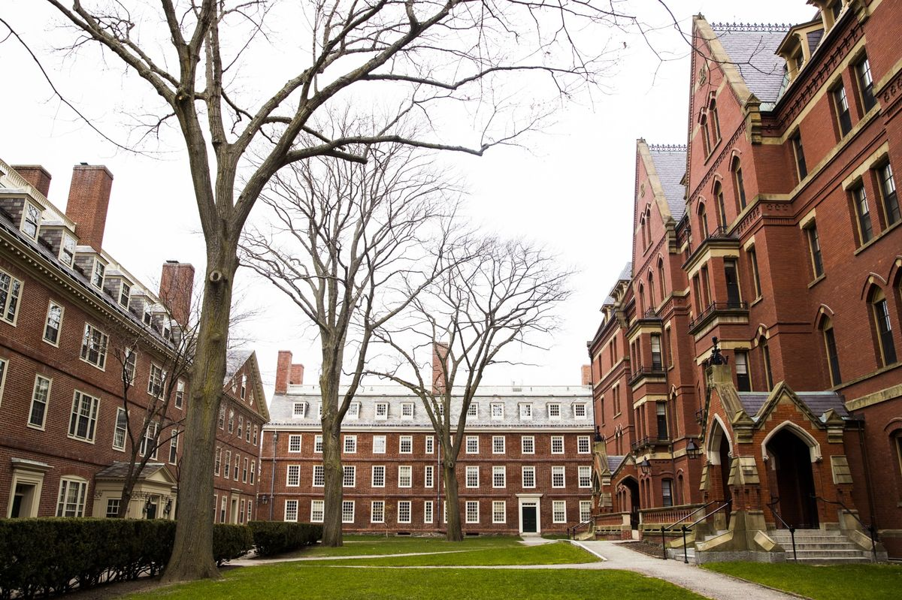

ABOUT US
Harvard is at the frontier of academic and intellectual discovery. Those who venture here—to learn, research, teach, work, and grow—join nearly four centuries of students and scholars in the pursuit of truth, knowledge, and a better world.
Harvard’s research, scholarship, and educational opportunities are made possible by an endowment. Our endowment includes thousands of philanthropic gifts donated since Harvard’s early history, many of which were given to support specific aspects of the University’s work.
These gifts form a permanent source of funding that connects scholars and learners from many diverse backgrounds with opportunities at Harvard, now and into the future.
Events Club Forum is the event for them event industry, the event where you meet professionals only, the event where you gain within just two days, most valuable business contacts.
The event was born realizing the original trade shows offer huge time loss. The investments made in preparation to be able to meet prospects, the midweek days, the many unknown visitors on the floor.
At the Events Club Forum, efficiency is key: No visitors are attending to just fill the floor, you can, if you want, be productive back in the office on Wednesday, and the event organization creates your match-made meeting schedule in the exhibition as well as the B2B area, whilst leaving time to attend keynotes.